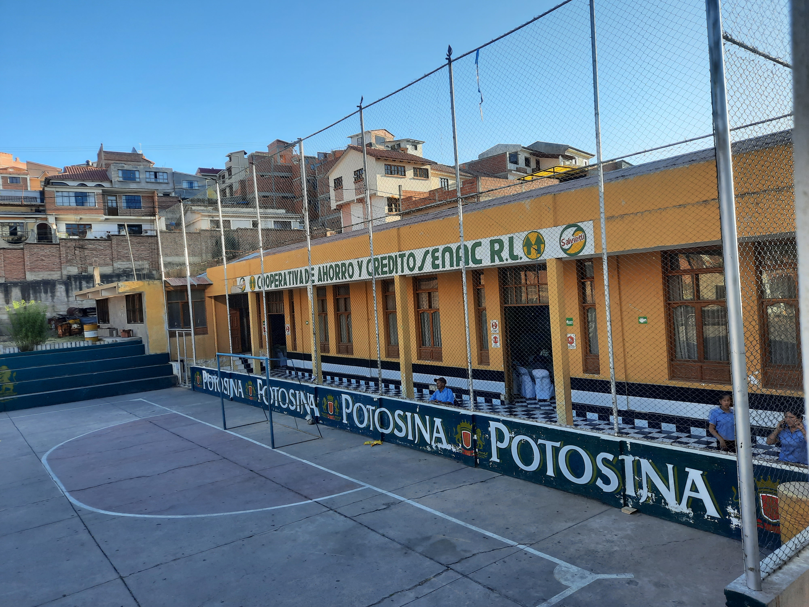
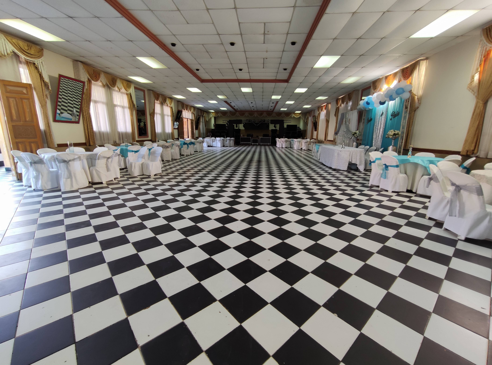
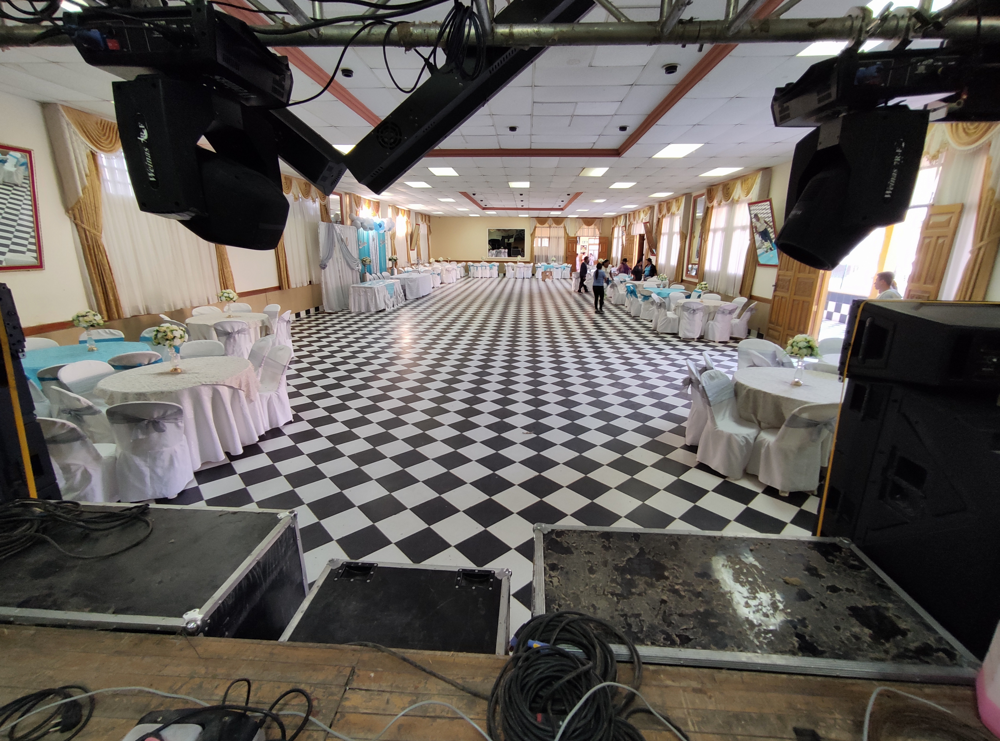
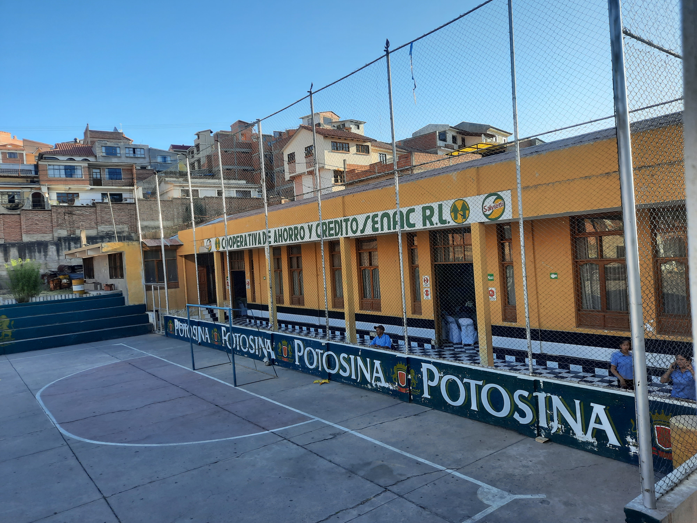
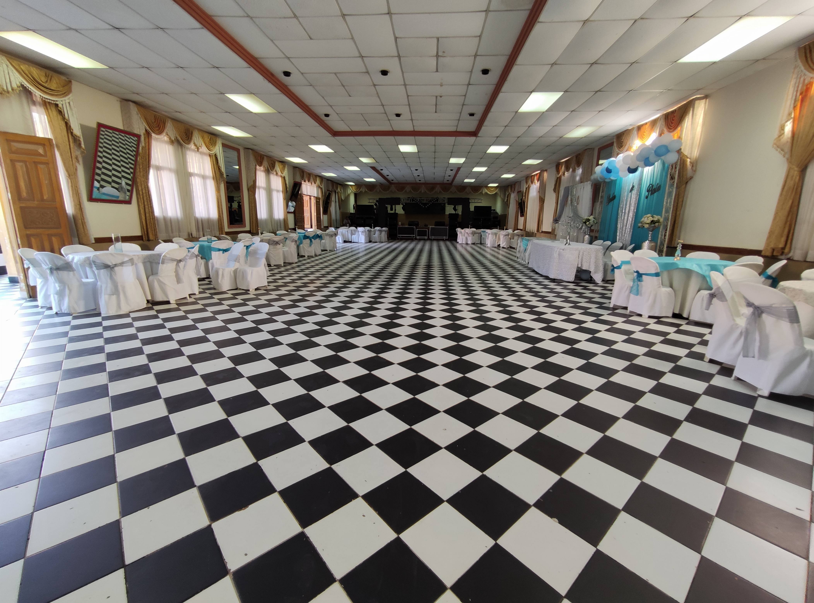
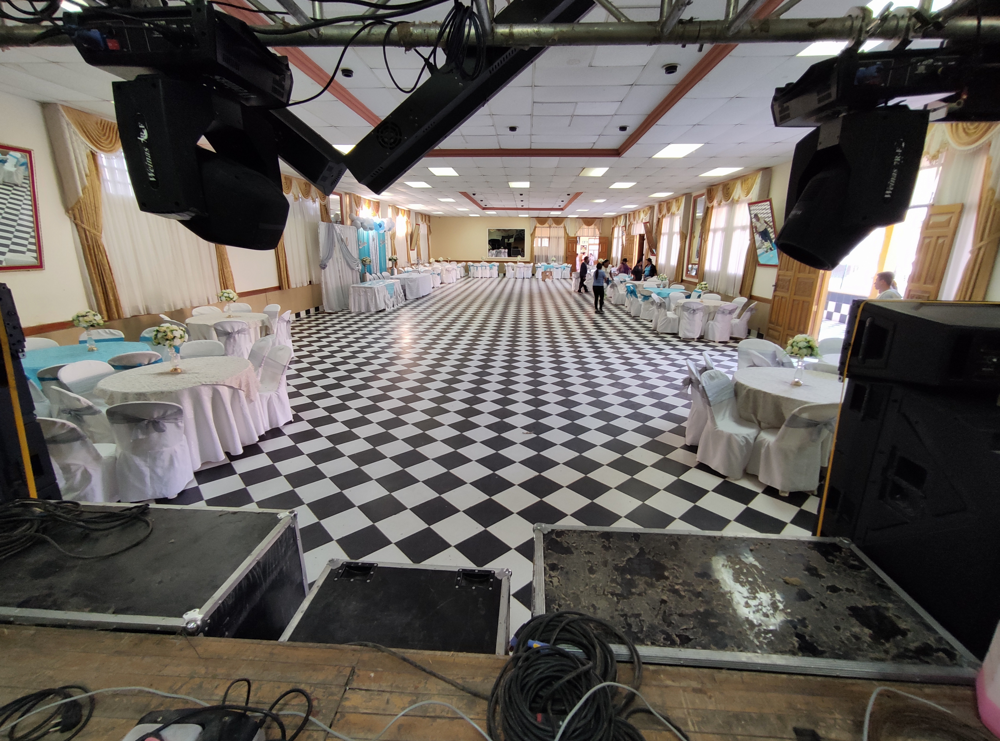

H
SERVICIOS
Conoce todos los servicios que te ofrece el complejo SENAC
u
MAS INFORMACIÓN
Te explicamos nuestros servicios y los requisitos necesarios para tu reserva
a
PORTAFOLIO
¡Observa nuestros ambientes!
ACERCA DE NOSOTROS
FUNDACIÓN E HISTORIA
Nos remontamos a tiempo atrás donde los socios y socias compraron 14 hectáreas de terreno, de estas una quedaría para la edificación de la Cooperativa de Ahorro y Crédito SENAC R.L, esta es una cooperativa cerrada que ofrece sus servicios sin fines de lucro a sus asociados y asociadas. Los socios buscaban una inversión a largo plazo por lo que aperturaron el Complejo SENAC, un complejo multifuncional de eventos para la recreación de sus familias y del público en general.
PLANIFICACIÓN
Ofrecemos opciones y soluciones para cada necesidad. El Complejo SENAC es el lugar ideal para llevar a cabo la celebración de tu evento familiar o corporativo.
MISIÓN Y VISIÓN
Misión: Ocuparnos de la organización, coordinación y desarrollo de las celebraciones y demás eventos; de tal manera que disfruten los invitados Y los anfitriones..
Visión: Posicionarnos entre las mejores opciones que existen en Sucre como un complejo multifuncional, siendo reconocidos por nuestros principios y valores de servicio, profesionalismo, honestidad y compromiso con nuestros clientes.
PRINCIPIOS Y VALORES
Los principios y valores que sustentan al Complejo SENAC son los siguientes:
Solidaridad: Es el interés por la colectividad, que permite desarrollar y promover prácticas de ayuda mutua y cooperación entre los interesados y la comunidad.
Igualdad: Igualdad de derechos, obligaciones y oportunidades de acceder a los beneficios que brinda el Complejo SENAC, sin que existan preferencias ni privilegios.
Reciprocidad. Prestación mutua de bienes y servicios para beneficio común, desarrollados entre interesados, entre el Complejo SENAC y con su entorno, en armonía con el medio ambiente.
Equidad en la Distribución. Todos los interesados recibirán de forma equitativa, los beneficios y servicios que otorga el Complejo SENAC.
Finalidad Social. El Complejo SENAC adopta como principio la primacía al interés social por encima del interés individual.
GALERÍA
 




